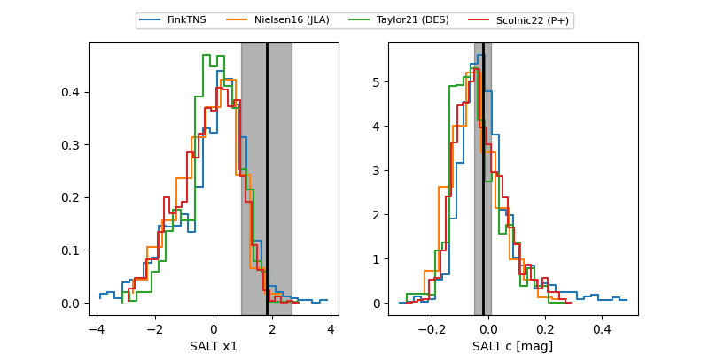

FINK: ZTF25abqqkyc
Lasair: ZTF25abqqkyc
ALeRCE: ZTF25abqqkyc
TNS: 2025xrs
YSE: 2025xrs
ZTF25abqqkyc (ztf,fink)
2025xrs (tns,yse)
PS25hoc (panstarrs)
equatorial (ra, dec) = (55.6690,-14.11945)
galactic (l, b) = (203.6842,-48.10929)

last atlasc=18.96, atlaso=18.92, ps1::g=19.08, ps1::r=19.10, ztfg=19.72, ztfr=19.28
1 atlasc, 2 atlaso, 2 ps1::g, 3 ps1::r, 1 ztfg, 2 ztfr detections